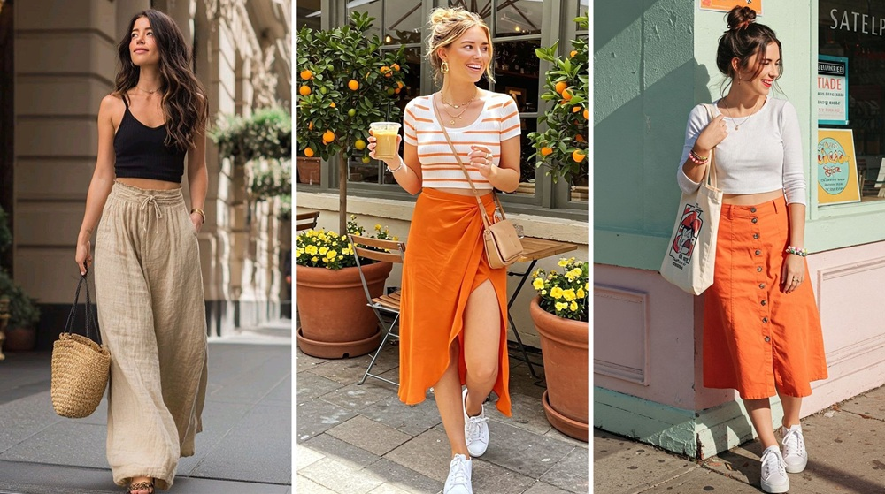
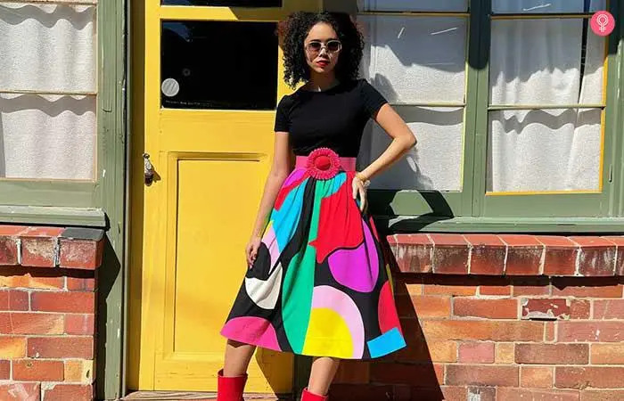

April 2026
Get ready to refresh your wardrobe, because 2026 is shaping up to be a defining year in fashion. We are moving away from temporary trends and leaning into a blend of "Quiet Luxury" and confident, maximalist expression. According to leading industry forecasts, the year ahead is all about comfort, sustainability, and celebrating the human touch in clothing.

-
🤫 Quiet Luxury & Refined Basics
Minimalism isn't dead—it's just matured. 2026 focuses on premium, soft fabrics (taupe, beige, and soft white) that prioritize fit and quality over logos. Think refined staples that last longer
-
🧶 Soft Femininity & Texture
Romanticism is back. Expect to see a rise in lace maxi skirts, delicate knit textures, and soft shoulder lines. It’s a gentle, graceful aesthetic that feels modern yet intimate.
-
🚀 Function-Driven Fashion (Gorpcore)
Performance meets daily wear. Technical fabrics, cargo pants, and practical accessories are no longer just for hiking—they are staples of 2026’s daily uniform, focusing on versatility, comfort, and, of course, pockets.
-
🕺'80s Power Dressing & Modernized Vintage

We’re looking back to move forward. The '80s are back with a vengeance: think bold shoulders, tailored power suits, and striking polka dots, updated for today’s relaxed lifestyle
-
🎨 Vibrant & Unexpected Color Palettes
While neutrals reign, they are accompanied by joyfully bold colors. Look out for deep teal, bright orange, and chartreuse green popping up in accessories and statement pieces, often worn together.
-
👢 Statement Footwear & Accessories
Accessories in 2026 are designed to stand out. From ballet flats with a twist to chunky, oversized jewelry and brooches, the goal is to add personality to simple outfits.